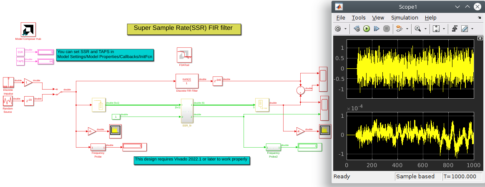

This reference design can be used as a starting design point when efficient implementations of very high data rate (over 1 Gsps) Single Rate FIRs are required. This PL based design can be used in any modern Xilinx device - 7-Series/UltraScale/UltraScale+/Versal.

This Single Rate SSR FIR reference design illustrates a number of advanced Vitis Model Composer design techniques:
This is a fully parameterizable design - you can control the filter order N, the number of clocks per sample SSR, the filter type (non/even/odd-symmetric), the input, output and coefficient fixed point quantization; you can set SSR and TAPS in Model Settings/Model Properties/Callbacks/InitFcnall the rest of the SSR FIR parameters can be set in the Model Composer block dialog
If desired, you can floorplan the DSP blocks directly from Vitis Model Composer
This is achieved through the use of Model Composer HDL Black Box flow, all these features are implemented in the underlying VHDL-2008 code; the reference design shows how to pass ports and parameters with generic sizes between Model Composer and VHDL code; the underlying VHDL-2008 code shows how to use arbitrary precision fixed point types, recursive component instantiations, how to instantiate DSP primitives independent of FPGA family (7-Series/UltraScale+/Versal) and floorplan them from VHDL code
The Vitis Model Composer design includes a top level Simulink self-checking testbench, which compares the fixed point HDL Black Box based implementation to a golden reference floating point model
This is a very high speed design, clock frequencies up to the maximum data sheet values of 741/891/1150 MHz in the fastest speed grade 7-Series/UltraScale+/Versal devices are possible
The design also shows a technique to avoid the Versal 795/824/872 MHz fMAX limitation due to SRL16 minimum pulse width spec
The VHDL code inside the Model Composer HDL Black Box can be instantiated stand alone in a Vivado RTL project. MATLAB and Vitis Model Composer are used here to illustrate the flow and make functional verification easier.